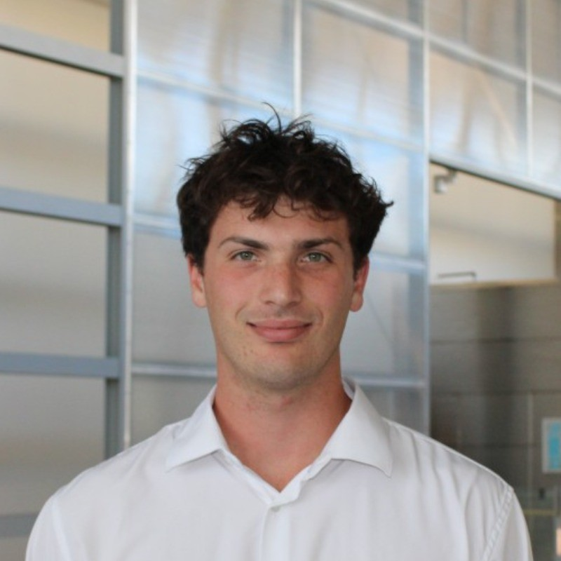

Full-Stack Hardware Engineer
I work at the seams of hardware, electrical, and software. I've carried products from mechanical design and custom PCB through firmware bring-up, motion control, and automated test, in both pre-seed and regulated medical environments.
Novel vacuum-based layer jammer wearable for VR haptic feedback. First-author IEEE publication. Designed, prototyped, and validated the full system.
I was the entire engineering function at a pre-seed medical wearable startup. I took the prototype from breakout boards to a custom 4-layer PCB, and owned the tradeoff the company kept running into: better signal costs parts, power, and time we didn't have.
Portable active-resistance elbow exoskeleton built by a 4-person senior design team, which I lead. Torque varies with joint position at 50 Hz instead of holding a fixed load. Won both top awards at the UW–Madison senior design expo ($6,000 total).
An AI training coach built for exactly one user: me. Claude Code made the building cheap — the scarce part is deciding what is worth building and telling whether the output is any good. My testbed for where an LLM earns its place and where a plain Swift function beats it.
Retrieval-augmented tool that turns plain-English questions into SQL. Cut workforce database query time from 45 minutes to under 10 seconds and unblocked 12+ managers' decision workflows. Won the CTO's "3 Heartbeats" Award.
24/7 simulation and test framework for anesthetic delivery equipment. 100k+ simulated breathing cycles driven through 3D-printed hardware interfaces for unattended stress and regression testing.
Built a working security camera prototype from off-the-shelf hardware to validate the imaging pipeline ahead of custom optics, designed lens housings for unreleased optics, and automated the photo data collection rig — cutting experiment duration by 30%.
Binary SEM fracture classification comparing 4 architectures. ResNet50 achieved 98% accuracy, pruned to 97.8%.
Solo-built Swift iOS app for global incident reporting. Frontend, backend, and database. Built in high school.
Potentiometer glove controlling a servo-driven hand. First Arduino and PCB experience. The project that started it all.
Core competencies across four engineering domains. Explore the interactive graph below for the full picture.
Sole technical lead at a pre-seed medical device startup — the entire engineering function. I owned the system architecture and roadmap for a wearable remote patient monitoring platform, and designed a 4-layer custom PCB in KiCad that moved the prototype off breakout boards to surface-mount and resolved sensor front-end signal integrity faults, worked on the iOS app and BLE data path, and hired and managed our first electrical engineer. Being the only engineer meant the harder half was translating what the clinical side needed into buildable requirements, arguing signal fidelity against very limited resources, and defending those tradeoffs to investors.
Promoted from co-op to own internal AI tooling, using LLMs to automate company-wide budget allocation. Continued building on the AI ARC OPS platform I developed during the co-op.
Built a 24/7 automated Monte Carlo simulation and test framework for anesthetic delivery equipment, running 100k+ simulated breathing cycles through 3D-printed hardware interfaces for unattended stress and regression testing. Separately shipped "AI ARC OPS," a retrieval-augmented generation tool that cut workforce database query time from 45 minutes to under 10 seconds and unblocked 12+ managers' decision workflows — awarded the CTO's 3 Heartbeats Award.
Built a working security camera prototype from off-the-shelf hardware to validate the imaging pipeline on real hardware ahead of custom optics. Designed and tested novel lens housings for unreleased optics, iterating mechanical concepts against the ML team's imaging requirements. Also built an automated photo data collection system, instrumenting the rig with sensors to monitor capture conditions and enforce dataset quality, which cut experiment duration by 30%.
Identified an unmet need in VR haptics and pioneered a novel method of using layer jammers as actuators for feedback devices. I designed, fabricated, and tested the S.E.S.H. Glove system and published the results as First Author at IEEE Haptics Symposium 2024.
3.83 GPA · 5x Dean's List
Coursework: Mechatronics, Instrumentation & Measurements, Advanced CAD, Metals and Polymer Manufacturing.

I work at the seams of hardware, electrical, and software — the places where a project stops being anyone's clear responsibility.
I've carried products from mechanical design and custom PCB through firmware bring-up, motion control, and automated test, in both pre-seed and regulated medical environments. From a robotic hand in high school to IEEE-published haptics research to sole technical lead on a medical wearable, I'm drawn to problems that need the whole stack to solve — and to the seat where engineering decisions and business decisions are the same decision.
Currently finishing my BS in Mechanical Engineering at UW–Madison (Dec 2026). Originally from the Bay Area.